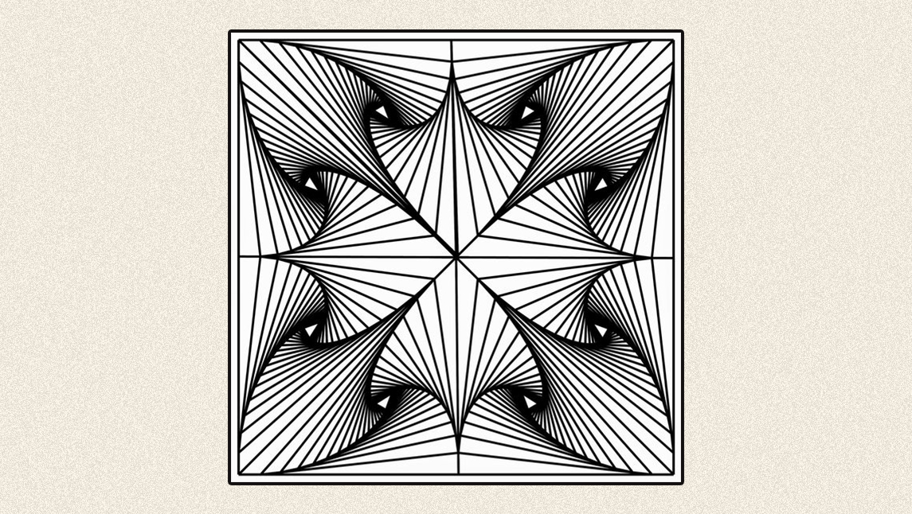

Un fractal geométrico es un objeto cuya estructura básica se repite en diferentes escalas. En general, los fractales son generados por un proceso repetitivo, capaz de producir formas autosimilares independientemente de la escala específica.
En otras palabras, se trata de una estructura cuya geometría se mantiene idéntica excepto por su escala. De hecho, en un fractal ideal naufragaríamos sin distinguir en qué escala estamos.
El más famoso generado por computadora es el “set de Mandelbrot”. En una animación se ve que, a medida que nos introducimos en la figura, vuelve a aparecer la geometría inicial. Y este proceso puede repetirse indefinidamente, tanto como la capacidad de la computadora lo permita; si fuese ilimitada, también lo sería el fractal.
El punto es que en el estado metafísico de las cosas hay ciertas geometrías, ciertos axiomas y leyes universales que se repiten en las diferentes escalas de la creación. El Universo es un fractal que se copia a sí mismo: desde lo infinitamente pequeño, que habita dentro nuestro, hasta lo infinitamente grande, que escapa de nosotros. Los fractales son el medio para ver el infinito.